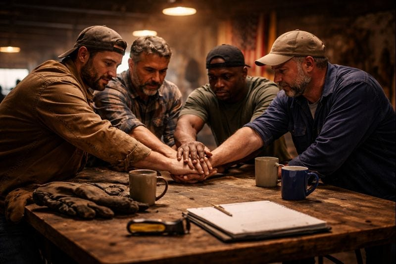

We wake up at 6 AM or earlier. Not because we’re inspired—because the alarm goes off and the day doesn’t wait.

We wake up at 6 AM or earlier. Not because we’re inspired—because the alarm goes off and the day doesn’t wait.
We pull on work clothes, grab whatever counts as breakfast, and go. Into traffic. Onto a job site. Into a warehouse, a plant, a store, a truck cab, a hospital corridor, a terminal, a call queue. Some days it’s steady. Some days it’s piecemeal. Some days it’s two or three kinds of work stitched together just to keep the numbers barely true.
We work with our hands. Our backs. Our attention. Our patience. We lift, fix, drive, stock, clean, deliver, repair, manage, de-escalate. We follow procedures written by people we’ll never meet. We answer to supervisors who rotate in and out. Hours get cut. Schedules change. Benefits shrink. Rules never apply upward. Pay gets taxed. Purchasing power gets quietly bled out through inflation.
At night we’re tired in a way sleep doesn’t fix. The kind of tired that comes from effort that doesn’t accumulate. You return to an empty place you don’t own. You eat, scroll, fall asleep—and do it again.
We did what we were told. And it didn’t work.
Something essential is missing. You can feel it too.
It’s not just money. It’s the loneliness that comes with being disposable. The knowledge that if you got sick, got hurt, got laid off, got divorced, got depressed—you’d be told to “reach out,” and then you’d carry it alone anyway. No brothers. No backstop. No one showing up.
We’re busy, but not advancing. Employed, but not secure. Responsible, but replaceable.
This isn’t laziness. It isn’t a character flaw. It’s what happens when effort stops accumulating.
Men will work hard. Men will endure. Men will sacrifice—but only when the sacrifice goes somewhere.
For generations, it did. Work became stability. Stability became family. Family became legacy. Sacrifice compounded across time.
That bargain is broken.
“We mutually pledge to each other our Lives, our Fortunes and our
sacred Honor.”
—The Declaration of Independence (1776)
The real divide isn’t tribe. It’s material.
Between people whose assets rise with inflation—and people whose
wages don’t.
Between people who collect rent—and people who pay it.
Between people who live off ownership—and people who live off labor.
This isn’t socialism. It’s arithmetic.
When housing becomes an investment vehicle, shelter gets
expensive.
When education becomes debt extraction, opportunity gets
expensive.
When healthcare becomes a profit center, being alive gets expensive.
You can work two jobs and still lose ground. That’s not your failure. That’s extraction.
And extraction isn’t mysterious. It’s legal. It’s institutional. It has names:
Landlords who treat shelter as speculation.
Employers who keep you just under full-time to dodge benefits.
Banks that charge the poorest customers the most.
Licensing boards that lock out new workers.
Zoning that inflates incumbents’ assets and blocks supply.
Regulations written by industries to prevent competition.
This isn’t a conspiracy. It’s incentives. It persists because it pays.
And the reason it keeps paying is simple: we face it as individuals.
“Power concedes nothing without a demand.”
—Frederick Douglass
There is a rule no civilization escapes:
Power follows cohesion.
Politics responds to blocs. Markets reward networks. Institutions listen to groups that can act together.
And we’re not supposed to.
We are fragmented—by distraction, by argument, by systems designed to keep our attention bouncing every few seconds. Social media rewards outrage, not coherence. We get kept fighting over symbols while the material conditions of our lives deteriorate.
Once we see the pattern, we can’t unsee it:
A distracted population is easy to manage.
A reactive population cannot coordinate.
A fragmented population cannot bargain.
If we can’t coordinate, we can’t negotiate.
If we can’t negotiate, we get managed.
Solidarity is praised everywhere—except when it would give working men leverage. Coordination is encouraged for some and condemned for others. Atomization is sold as independence.
We don’t need perfect agreement. We need shared stakes and repeat contact. If we work for a living and our costs keep rising, we have shared stakes. That’s enough.
“A house divided against itself cannot stand.”
—Jesus
There is a word for what we’ve lost.
Ibn Khaldun called it asabiyyah: social solidarity—group feeling—mutual obligation that makes a group capable of acting as one.
It builds civilizations. It topples empires. Without it, no group survives contact with groups that have it.
And this isn’t foreign to America. Whatever else we argue about our origins, one thing is undeniable: we began as people who could bind themselves to one another—and pay costs.
When asabiyyah disappears, counterfeits rush in: outrage without coordination, identity without responsibility, spectacle without sacrifice.
We get sold the feeling of power—while being kept incapable of building it.
“We must all hang together, or assuredly we shall all hang
separately.”
—Benjamin Franklin
Whenever men feel pressure, a market forms.
Not a conspiracy. A market.
Pressure creates demand—for meaning, for orientation, for someone who sounds like they know what’s going on. And into that demand steps a familiar cast of figures.
They argue loudly.
They diagnose confidently.
They tell men what’s wrong—with women, with elites, with liberals, with
conservatives, with modernity itself.
Some preach discipline.
Some preach dominance.
Some preach revolt.
Some preach resignation.
Some preach endless commentary dressed up as courage.
Jordan Peterson.
Scott Galloway.
Nick Fuentes.
Myron Gaines.
Different politics. Same structure.
They convert male frustration into attention.
They convert attention into revenue.
They convert revenue into status.
And they leave their audience exactly where they found them: atomized.
Run the test.
After a year of consuming that content:
Do you have more men you can rely on?
Do you have a shared fund?
Do you have a coordinated local presence?
Do you have leverage anywhere that actually touches your rent, your job, or your cost of living?
Or do you just have better arguments and worse relationships?
This is the tell.
If a movement cannot point to tables, it is not building power.
If it cannot show mutual obligation, it is not solidarity.
If it does not survive offline, it is not real.
The grift is not that these men are lying about everything. Many of their critiques contain truth.
The grift is that truth without construction becomes spectacle.
Anger gets sharpened into rhetoric instead of leverage.
Insight gets monetized instead of institutionalized.
Men get emotionally activated and materially unchanged.
They sell the feeling of power while ensuring you never have it.
“The spectacle is not a collection of images,
but a social relation among people, mediated by images.”
—Guy Debord
So here is what happens next—not someday, not after a movement forms, not after the right leader emerges.
This week: text one person.
A coworker who’s solid. A guy from the gym. Someone from your neighborhood. An old friend. A cousin who gets it.
If texting feels harder than it should, that’s not weakness—that’s evidence of the problem. Do it anyway.
Send this (or your version of it):
“Hey, let’s have dinner this week. Phones off. Let’s just catch up. When are you available?”
If he asks what it is, say: “Just trying to get a regular meal going with people I trust.” That’s enough.
That’s it. That’s step one.
If he shows up, ask him who else he trusts—someone local, someone steady. Two becomes three. Three becomes five.
We’re not building a movement. We’re building a table.
Start with three to five men. Not perfect men. Not men who agree on everything. Men who live near you and will show up.
Rules of the table (keep it plain):
A real meal. Break bread together. Phones off.
No content night. No audience. No clout.
Reliability beats intensity: weekly if possible; otherwise every other week, same day, same time.
The table exists to solve concrete problems in our lives.
Meeting one: no agenda. Just show up. Eat. Talk.
Meeting two: if everyone came back, start a shared fund—ten or twenty dollars if you can, five if that’s what’s real. Used for car repairs, rent gaps, job leads, tools, childcare emergencies, a funeral flight, a lawyer consult. Reciprocity, not charity.
If ten dollars feels like a lot, remember: one car repair costs $400. One emergency room visit costs $1,200. Five guys at ten dollars a week is $200 a month—enough to handle most of what would otherwise break you. This isn’t charity you’re risking. It’s insurance you’re building.
Keep it clean:
Equal contributions when possible
Quick vote for uses
Receipts when it matters
If a man repeatedly takes and doesn’t show up, the table ends for him
Within 30 days, if we do this seriously, three things happen almost automatically:
We stop spiraling alone—because we’re seen regularly by men who
notice when we’re slipping.
Our options expand—because job leads, skills, and practical help start
moving through the group.
Our anger sharpens into leverage—because we’re no longer lone voices
shouting into the void.
Picture this: Five guys, three months. Started with $15 a week when they could. First month: tools loaned, car repair covered. Second month: job lead networked. Third month: showed up together at a zoning hearing—four minutes of testimony about housing costs. That’s not fiction. That’s the shape of what works when you stop waiting for permission.
This is what asabiyyah looks like in a modern town: repeated contact, shared costs, and mutual obligation.
If the table collapses—someone stops showing up, trust breaks, it just doesn’t gel—don’t treat it as failure. Learn what went wrong. Find different guys. Try again. Most first attempts at anything fail. The difference between atomization and power is whether you try twice.
“Without a struggle, there can be no progress.”
—Frederick Douglass
Small groups build trust. Federated groups build power.
Once our table is stable—after three months, after six—find another table doing the same thing. Coffee with their core guys. Share what’s working. Share what fails. Compare notes.
Then choose one local choke point that touches material reality: housing supply, licensing barriers, permitting delays, city fees, local taxes, school policy, public safety, transit access—whatever actually moves rent, wages, and entry into work.
Coordinate in lawful public ways:
Show up to a council or board meeting together
Speak one at a time, on the same point
Submit written comment together
Ask for specific, measurable changes
Vote as a bloc on local issues where small numbers matter
This is legal. This is public. This is boring. This is how leverage is built when turnout is low and rules are written by whoever reliably shows up.
If anyone tries to turn this into something else—illegal, violent, or theatrical—walk away. That’s a different project.
We’re not waiting for permission.
We’re not waiting for a platform.
We’re not waiting for the right leader.
We are just doing things.
“The most common way people give up their power is by thinking they
don’t have any.”
—Alice Walker
We don’t have all the answers. No one does in advance.
But continuing as we are is not viable—and we already know this.
Every week we wait is another week the algorithm owns our attention, and local rules get written without us.
So: this week, text one person. Pick a day. Host a meal. Commit to continuity.
Asabiyyah is not a metaphor. It is a technology.
And the technology is open-source.
Share this essay if you want. But don’t let sharing replace building.
Build the table.